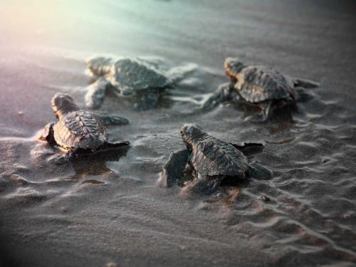

Is Skyglow bad?
01 July 25
Vishnu Vardhan
5 min read
What is Skyglow?
Skyglow is a term used for referring to skies with artificial lighting. Skyglow is an immediate cause of using unnecessary and excessive lighting skywards.
Skyglow outshines the starlight, completely blocking it, resulting in static glow in the sky making it harder to see celestial objects in the sky. This issue is far more bigger than it seems, skyglow affects humans as well as animals, and also impacts the ecosystem's natural patterns.
How is skyglow bad?
Sleep cycles are disturbed for human beings due to skyglow. Studies have proved that excessive lighting especially blue lights cause sleep disruption in humans as it affects melatonin production, making it harder to fall asleep and harder to stay asleep.
Animals are significantly in trouble, especially the nocturnal animals like
birds,
tortoise,
insects
as their feeding, reproductive and migration cycles are being disturbed.
Thousands of birds die every year due to collisions to structures with excessive lighting when they are in migrating period. Unnatural lighting causes them to deter from their course and are drawn towards it.
Migratory birds are affected the most, causing them to fly off course, become exhausted or collide with structures.
Vast number of turtle hatchlings are dying as they have a natural instinct to go into the sea guided by the moon light after hatching but due to uncontrolled street lights, they are drawn away from the oceans and towards the roads, leading to dehydration, vehicle stepovers, exhaustion or predation.
Artificial lights are causing the female turtles to detour from a beach for nesting.
Many insects depend on dark conditions to navigate and find their mates, but artificial lights disrupt these behaviours. And declining insect population leads to bigger problems as birds, bats and other animals rely on them for food.
Light pollution causes difficulty for nocturnal mammals to find food and shelter, as they rely on darkness for hunting and avoiding predators.
Light pollution can create barriers that prevent animals from accessing certain areas, leading to habitat fragmentation and reduced genetic diversity.